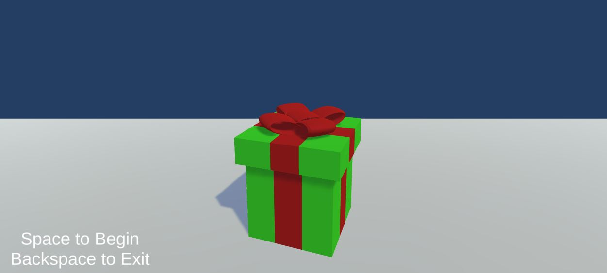

4th of July
Surprise
This was a cute project I made for my girlfriend to cheer her up when she spent July 4th away from home. I thought it was an interesting way to "surprise" someone without being able to see them in person and she fairly enjoyed it despite the unique way I gave it to her.
This mini-game was made using Unity within a few hours, it was also a learning experience as it was my first attempt to make fireworks in Unity, and I think I did a pretty good job of it.
The game can be played through the interface below!